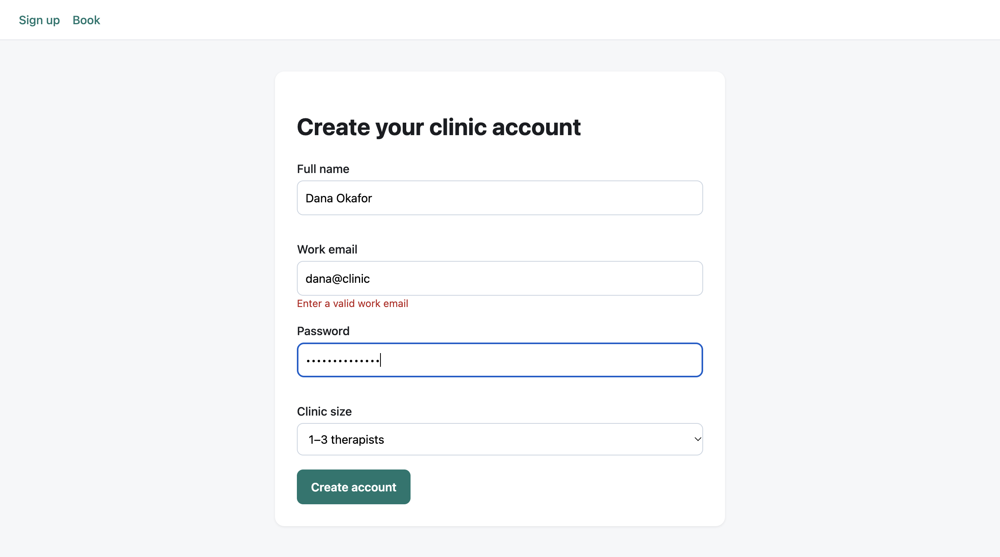
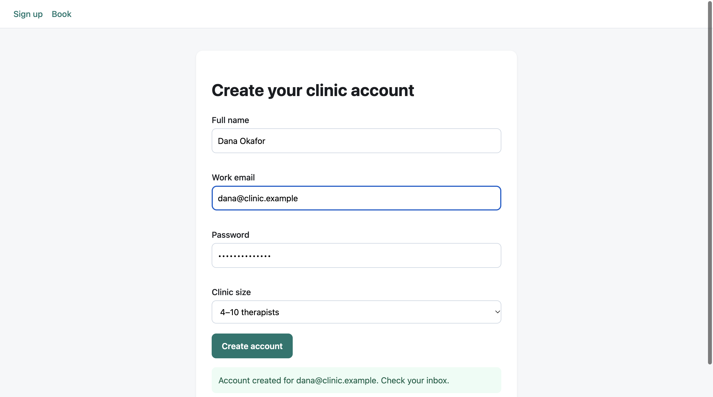

Output


Result
Signup flow tested by driving a real Google Chrome (dedicated --user-data-dir in the scratch folder, not the user's profile) through the chrome-cdp skill's CLI, against the fixture on http://127.0.0.1:7131/#signup.
Invalid email (dana@clinic, valid name and password): submit is rejected, "Enter a valid work email" shows under the email field, name and password errors stay empty, the result area stays empty. Valid data (dana@clinic.example, 4–10 therapists): the error clears and a role=status banner reads "Account created for dana@clinic.example. Check your inbox." The resource-timing list (cdp net) is empty after the submit, i.e. the "success" never touches a server – it is purely client-side.
What the skill's tooling taught me: cdp click runs element.click() through eval, which does NOT focus inputs, so my first attempt (click + type) typed into nothing and all three validation errors appeared (step 3 shows it). Real focus needed clickxy at element-centre coordinates (from getBoundingClientRect) and then type, which is the flow the skill's Coordinates section describes.
Environment swap: the skill expects Chrome's DevToolsActivePort file, which Chrome only writes when remote debugging is enabled from chrome://inspect (or port 0). I launched Chrome with --remote-debugging-port=7132 (my assigned range) and wrote the two-line DevToolsActivePort file in the dedicated profile myself from /json/version, then pointed CDP_PORT_FILE at it. No "Allow debugging" modal appeared. Chrome ran headed but off-screen (window position 2000,0).
Terminal
# Dedicated profile, never the user's Chrome. With a fixed port Chrome does not write DevToolsActivePort.
"/Applications/Google Chrome.app/Contents/MacOS/Google Chrome" --user-data-dir=/tmp/claude-501/lab2/chrome-cdp/profile --remote-debugging-port=7132 --no-first-run --window-position=2000,0 about:blank
DevTools listening on ws://127.0.0.1:7132/devtools/browser/…
# Hand-written port file (the swap described above); the skill's CLI then finds the browser.
printf '7132\n/devtools/browser/<id from /json/version>\n' > profile/DevToolsActivePort; export CDP_PORT_FILE=…/profile/DevToolsActivePort; scripts/cdp.mjs list
8ABD7225 about:blank about:blank
# click does el.click() (no focus), so type inserted into nothing: all three errors fired.
nav, click + type (first attempt)
$ cdp nav 8ABD7225 http://127.0.0.1:7131/#signup
$ cdp click 8ABD7225 #name
Clicked <INPUT> ""
$ cdp type 8ABD7225 Dana Okafor
Typed 11 characters
$ cdp click 8ABD7225 #email
Clicked <INPUT> ""
$ cdp type 8ABD7225 dana@clinic
Typed 11 characters
$ cdp click 8ABD7225 #pw
Clicked <INPUT> ""
$ cdp type 8ABD7225 hunter2hunter2
Typed 14 characters
$ cdp click 8ABD7225 button[type=submit]
Clicked <BUTTON> "Create account"
$ cdp eval 8ABD7225 JSON.stringify({emailErr:document.getElementById("e-email").textContent, nameErr:document.getElementById("e-name").textContent, pwErr:document.getElementById("e-pw").textContent, banner:document.getElementById("result").innerHTML})
{"emailErr":"Enter a valid work email","nameErr":"Enter your name","pwErr":"Use at least 8 characters","banner":""}
# Real mouse click at CSS coordinates focuses the field; values landed, only the email error remains.
fillxy: eval centre of field -> clickxy -> type (for #name, #email, #pw), then click submit, eval, shot
$ cdp nav 8ABD7225 http://127.0.0.1:7131/#book
Navigated to http://127.0.0.1:7131/#book
$ cdp nav 8ABD7225 http://127.0.0.1:7131/#signup
Navigated to http://127.0.0.1:7131/#signup
$ cdp eval 8ABD7225 location.reload()
$ cdp eval (centre of #name) -> 640 253
$ cdp clickxy 8ABD7225 640 253
Clicked at CSS (640, 253)
$ cdp type 8ABD7225 Dana Okafor
Typed 11 characters
$ cdp eval (centre of #email) -> 640 356
$ cdp clickxy 8ABD7225 640 356
Clicked at CSS (640, 356)
$ cdp type 8ABD7225 dana@clinic
Typed 11 characters
$ cdp eval (centre of #pw) -> 640 459
$ cdp clickxy 8ABD7225 640 459
Clicked at CSS (640, 459)
$ cdp type 8ABD7225 hunter2hunter2
Typed 14 characters
$ cdp click 8ABD7225 button[type=submit]
Clicked <BUTTON> "Create account"
$ cdp eval 8ABD7225 JSON.stringify({name:document.getElementById("name").value,email:document.getElementById("email").value,emailErr:document.getElementById("e-email").textContent, nameErr:document.getElementById("e-name").textContent, pwErr:document.getElementById("e-pw").textContent, banner:document.getElementById("result").innerHTML})
{"name":"Dana Okafor","email":"dana@clinic","emailErr":"Enter a valid work email","nameErr":"","pwErr":"","banner":""}
$ cdp shot 8ABD7225 /Users/kametayturar/agentic-ui/ai-answer/public/skill-lab/chrome-cdp/browser-1-invalid.png
/Users/kametayturar/agentic-ui/ai-answer/public/skill-lab/chrome-cdp/browser-1-invalid.png
Screenshot saved (DPR 2).
# cdp net prints nothing: no network request was made for the signup.
select email, type valid address, set size, submit, eval, net, shot
head: illegal line count -- 0
$ cdp eval 8ABD7225 document.getElementById("email").select()
$ cdp type 8ABD7225 dana@clinic.example
Typed 19 characters
$ cdp eval 8ABD7225 document.getElementById("size").value="4–10 therapists"
4–10 therapists
$ cdp click 8ABD7225 button[type=submit]
Clicked <BUTTON> "Create account"
$ cdp eval 8ABD7225 JSON.stringify({email:document.getElementById("email").value,emailErr:document.getElementById("e-email").textContent,banner:document.getElementById("result").textContent,role:document.querySelector("#result .ok").getAttribute("role")})
{"email":"dana@clinic.example","emailErr":"","banner":"Account created for dana@clinic.example. Check your inbox.","role":"status"}
$ cdp net 8ABD7225
$ cdp shot 8ABD7225 /Users/kametayturar/agentic-ui/ai-answer/public/skill-lab/chrome-cdp/browser-1-valid.png
/Users/kametayturar/agentic-ui/ai-answer/public/skill-lab/chrome-cdp/browser-1-valid.png
Screenshot saved (DPR 2).
Files
fillxy.sh (helper around the skill's eval/clickxy/type)
#!/bin/bash # fillxy.sh <target> <selector> <text>: real mouse click at element centre (clickxy), then type T=$1; SEL=$2; TXT=$3 XY=$(/tmp/claude-501/lab2/chrome-cdp/cdp.sh eval $T class="s">"(()=>{const r=document.querySelector('$SEL').getBoundingClientRect();return Math.round(r.x+r.width/2)+' '+Math.round(r.y+r.height/2)})()") echo class="s">"\$ cdp eval (centre of $SEL) -> $XY" /tmp/claude-501/lab2/chrome-cdp/runlog.sh clickxy $T $XY /tmp/claude-501/lab2/chrome-cdp/runlog.sh type $T class="s">"$TXT"